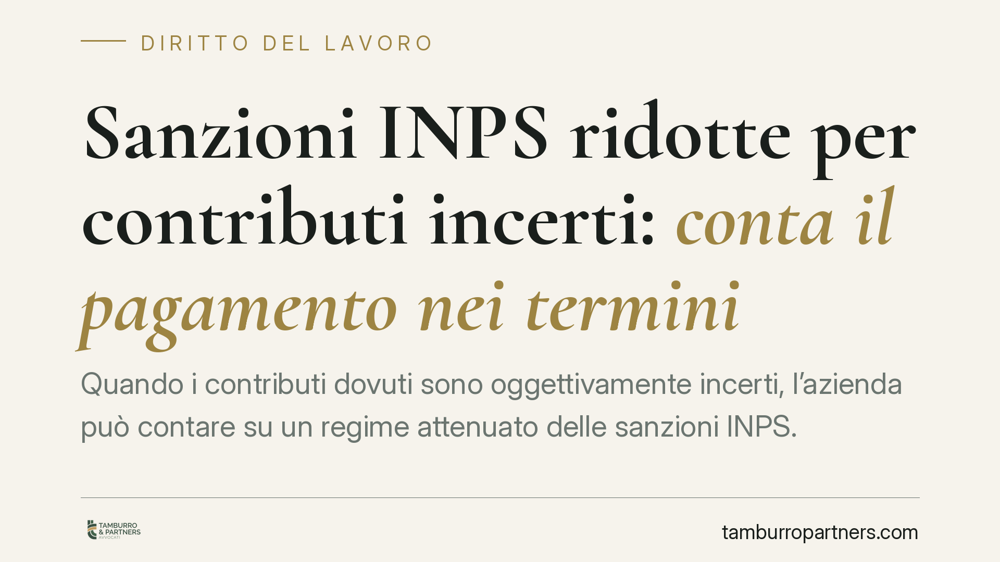

Sanzioni INPS ridotte per contributi incerti: conta il pagamento nei termini
Quando i contributi dovuti sono oggettivamente incerti, l'azienda può contare su un regime attenuato delle sanzioni INPS. Ma il beneficio non è automatico: secondo un recente orientamento di legittimità, occorre anche versare quanto dovuto entro il termine indicato dall'ente. L'incertezza interpretativa, da sola, non basta a salvare la riduzione se il pagamento tarda.

Il caso
Un'azienda si trova a gestire una posizione contributiva controversa: la spettanza e la misura dei contributi dipendono da un quadro interpretativo non lineare, con orientamenti divergenti tra prassi amministrativa e giurisprudenza. In situazioni simili la legge riconosce un regime sanzionatorio più mite. La domanda pratica è però un'altra: l'incertezza, di per sé, è sufficiente a ottenere e conservare la riduzione, oppure serve anche pagare entro un certo termine?
La questione è stata affrontata da una pronuncia recente della Corte di Cassazione, che avrebbe superato un precedente indirizzo più favorevole al contribuente. Gli estremi esatti della decisione (numero, data di deposito e Sezione) vanno verificati alla fonte ufficiale prima di considerarli acquisiti: il dato circola ma non risulta ancora pienamente riscontrabile. Ci concentriamo quindi sul principio, non sull'etichetta.
Inquadramento normativo
Il riferimento è l'art. 116 della legge n. 388 del 2000, che disciplina le sanzioni civili dovute per omesso o ritardato versamento dei contributi previdenziali. La norma prevede, accanto al regime ordinario, ipotesi di riduzione delle sanzioni civili in presenza di situazioni particolari, tra cui le obiettive incertezze legate a contrastanti orientamenti giurisprudenziali o amministrativi sull'esistenza dell'obbligo contributivo.
Sul piano operativo, il sistema dell'art. 116 distingue tra il regime dell'omissione e quello dell'evasione (commi 8) e prevede meccanismi di riduzione e di decisione sulle domande di attenuazione (commi 15). Il punto controverso riguarda proprio il comma dedicato alle riduzioni per obiettive incertezze: la formulazione va letta nel testo vigente, evitando parafrasi che ne alterino la portata. Consigliamo sempre il raffronto con la versione aggiornata della norma, perché i presupposti applicativi sono stringenti.
Cosa cambia
Il punto qualificante dell'orientamento in esame è il rapporto tra due elementi: il se si versava in una situazione di dubbio e il quando si è effettivamente pagato.
Secondo questa lettura, l'incertezza interpretativa apre la porta al regime attenuato, ma non congela il debito a tempo indeterminato. Per conservare il beneficio occorrerebbe versare quanto dovuto entro il termine indicato dall'ente previdenziale. In altre parole, il dubbio giustifica la richiesta di riduzione, ma non l'inerzia nel pagamento.
Si tratta, va detto con chiarezza, di un principio legato alla pronuncia sopra richiamata e non ancora consolidato come diritto vivente pacifico. Chi affronta un contenzioso deve trattarlo come un'indicazione di tendenza, non come una regola incontestabile: la difesa può ancora articolarsi sui presupposti dell'incertezza e sulla tempistica concretamente accordata.
È inoltre utile ricordare la distinzione tra il piano amministrativo e quello giudiziale. La domanda di riduzione si propone in sede amministrativa all'INPS; l'eventuale diniego apre la via del giudizio davanti al giudice del lavoro. Le due fasi rispondono a logiche diverse e vanno curate con documentazione coerente fin dall'origine.
Cosa fare in concreto
- Ricostruire la posizione contributiva in modo puntuale: periodi, importi, causale dell'incertezza e fonti degli orientamenti contrastanti invocati.
- Non attendere la definizione del dubbio per pagare: valutare il versamento entro i termini indicati dall'ente, riservando la contestazione alla sola parte sanzionatoria.
- Documentare l'incertezza oggettiva: raccogliere circolari, messaggi INPS e precedenti giurisprudenziali difformi che giustificano la richiesta di regime attenuato.
- Presentare la domanda di riduzione in sede amministrativa con motivazione tecnica, distinguendo tra regime dell'omissione e dell'evasione.
- Verificare gli estremi esatti della pronuncia e la versione vigente dell'art. 116 prima di impostare la linea difensiva, evitando di fondarsi su citazioni non riscontrate.
In sintesi
L'incertezza sui contributi può giustificare sanzioni più lievi, ma difficilmente sostituisce un pagamento tempestivo. Il dubbio riguarda il se; il beneficio dipende anche dal quando si versa. Fino a un consolidamento dell'orientamento, la prudenza suggerisce di non separare le due dimensioni: contestare l'incertezza sul merito e, in parallelo, presidiare i termini di pagamento.
Contributo informativo a cura di Tamburro & Partners - Avv. Giuseppe Tamburro. Non costituisce parere legale.
Ogni storia di lavoro ha i suoi tempi.
Se gestisci HR e vuoi un confronto su contenzioso, ispezioni o licenziamenti, scrivi allo studio. Ti rispondiamo entro un giorno lavorativo.